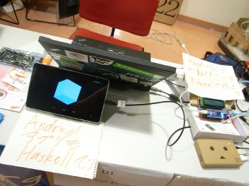
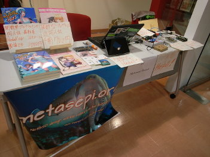
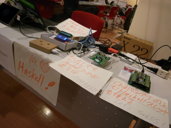
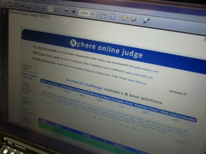
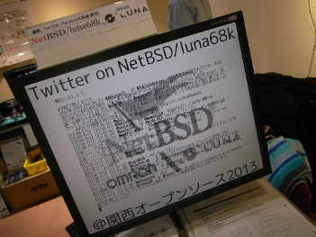

Metasepi作戦会議 第7回を KOF2013：関西オープンフォーラム2013 で開催したでゲソ。 今回はマイコンをAjhcコンパイラで開発するまとめとして ChibiOS/RT のスレッドをHaskellで置き換える話をトピックとして取り上げてみたでゲソ。
またAjhcコンパイラのMac OS Xでの継続的インテグレーションを Travis CI で実行しているので、Mac OS XアプリをTravis CIでビルドする手順を説明してみたでゲソ。 他のプロジェクトのお役に立てればうれしいでゲッソ!
    
blog comments powered by